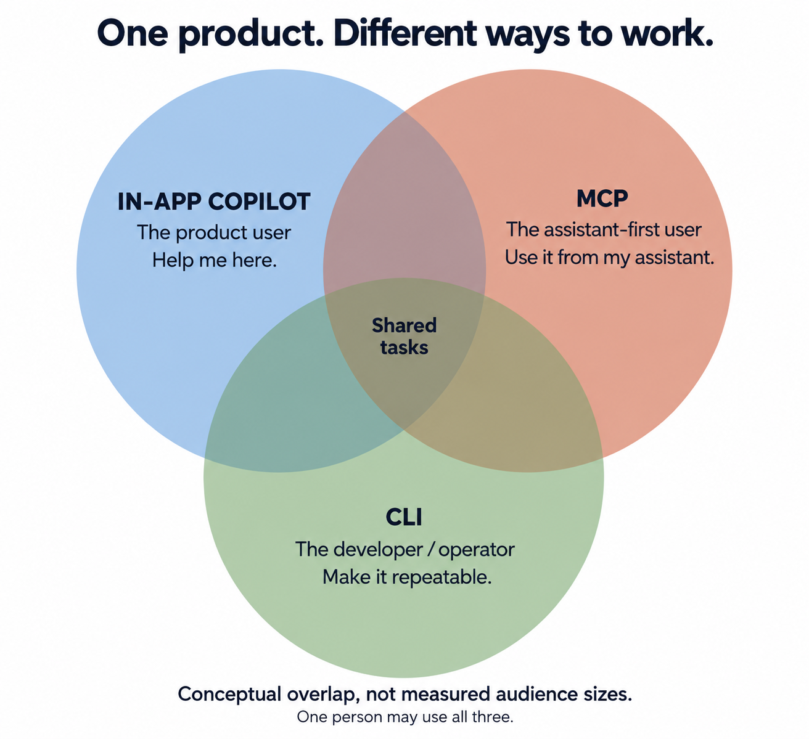

Your CEO Wants a Copilot. Who Is It For?
An in-app copilot, MCP, and a CLI serve different ways of working. Start with the customer.
Your CEO has seen a competitor’s copilot. You should have one. Someone mentions MCP. Engineering suggests a CLI.
You now have three proposed interfaces and a slightly less clear idea of who the customer is.
At Synthflow, one of our early questions was whether to build an in-app copilot or a public MCP server. We shipped both. It turned out we were serving largely different groups.
In one 30-day snapshot, only 6% of workspaces using either surface used both.
The in-app user is already looking at your product. They want help understanding something, changing a setting, or completing a task. Sending them elsewhere to configure an integration is an ambitious interpretation of “help”.
The MCP user is already working with an assistant. Your product is one of the systems it needs to access. They would quite like to finish the job without visiting your carefully designed dashboard.
The CLI user wants a repeatable operation. Something they can inspect, script, and run tomorrow without having another conversation about it.

These are overlapping ways of working. The same person can use all three. An agent can use a CLI. A non-technical person can use MCP through an assistant without knowing what those letters mean.
Each has a useful job. That does not mean they all belong in the next sprint.
Before choosing an interface, find out where the customer is when they need your product, what they are trying to finish, and what currently gets in their way. Then bring that back to the roadmap meeting.